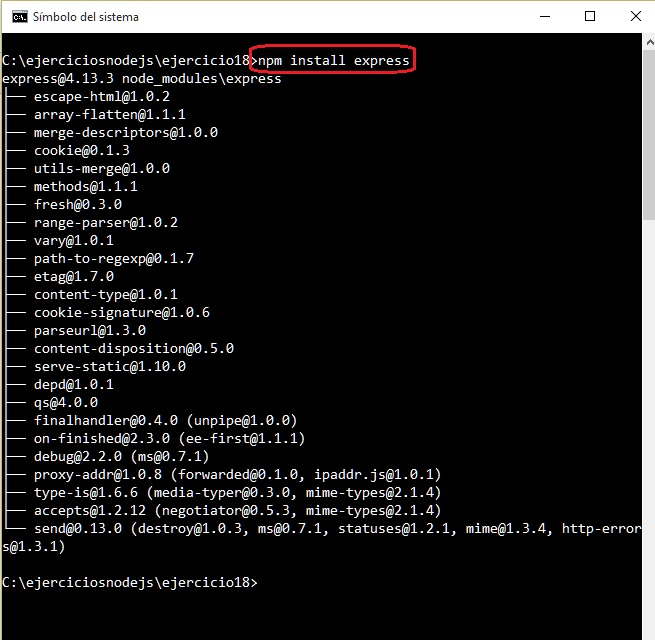
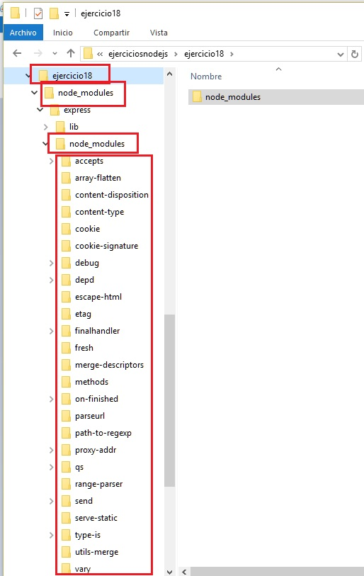
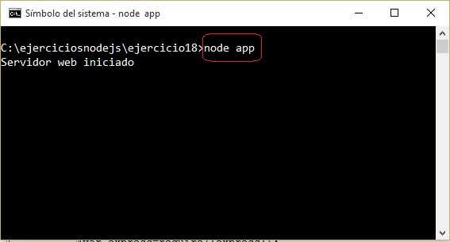
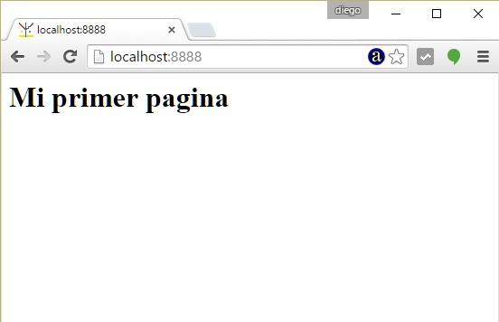

Hemos visto hasta ahora que con Node.js podemos desarrollar un sitio web completo, servir páginas estáticas y dinámicas.
La comunidad de Node.js ha desarrollado un framework para implementar sitios web llamado Express. Este framework nos facilita y nos ordena el desarrollo de sitios web.
Para trabajar con Express lo primero que haremos es instalarlo en nuestro proyecto. El Framework Express está constituido por un conjunto de módulos.
Lo primero que haremos es crear una carpeta : ejercicio18.
Una vez creada la carpeta desde la línea de comandos procedemos a instalar el framework mediante el npm:
c:\ejerciciosnodejs\ejercicio18>npm install express

Cuando se instala el framework como vemos se crea la carpeta 'node_modules' y en esta una subcarpeta 'express'. Si entramos en la carpeta 'express' veremos que también tiene su carpeta 'node_modules' con todos los módulos que depende el framework express:

Ya tenemos el framework de Express instalado, ahora procedamos a crear una aplicación mínima.
En la carpeta ejercicio18 procedamos a crear un archivo llamado 'app.js' y en su interior:
var express=require('express');
var app=express();
app.get('/',function (req,res){
res.send('<!doctype html><html><head></head><body><h1>'+
'Mi primer pagina</h1></body></html>');
});
var server=app.listen(8888,function(){
console.log('Servidor web iniciado');
});
En principio como sabemos no podemos sacar una conclusión de las ventajas que propone un framework implementando un sitio que retorna una página (un framework tiene ventajas cuando implementamos programas de mediana o gran complejidad)
Veamos como funciona nuestro programa. Primero requerimos el módulo 'express' que retorna la referencia a una función.
var express=require('express');
Llamamos a la función que nos retorna un objeto que se almacena en la variable app:
var app=express();
Mediante el método get del objeto app procedemos a especificar que para la ruta '/' (raíz de nuestro sitio) ejecute la función anónima que le pasamos como segundo parámetro.
La función anónima recibe dos objetos 'req' y 'res'. Mediante el objeto 'res' respondemos al navegador que hizo la solicitud enviando código HTML:
app.get('/',function (req,res){
res.send('<!doctype html><html><head></head><body><h1>'+
'Mi primer pagina</h1></body></html>');
});
Por último para arrancar el servidor web debemos llamar al método listen:
var server=app.listen(8888,function(){
console.log('Servidor web iniciado');
});
Ahora si arrancamos la aplicación:

y accedemos a la raiz del dominio localhost por el puerto 8888 tenemos como resultado:

Cada vez que implementemos un proyecto que requiera el framework Express lo primero que deberemos hacer es instalarlo para dicho proyecto.
Este proyecto con Express lo puede descargar en un zip con todos los archivos desde este enlace : ejercicio18